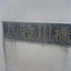

以下、素人なりに考えてみたので確証はない。
川と龍、あるいは大蛇（おろち）とは深い関係があるようだ。
どうも名前から八叉（やまた）の大蛇を連想してしまうのだが・・・。
この橋がある大三島（御島）には「大山祗（おおやまづみ）神社」がある。
この「祗」が漢字変換でなかなか出なかった。
で、「ぎおん」で変換したら出現した。
祗園（祇園）といえば、胡瓜が・・・。
隣接する宝物館には義経様や弁慶の奉納した太刀や長刀等多数展示。
京極堂お得意の「延喜式」によれば、名神大社であるとか。
この山の神はアマテラスの兄神である。
国津神である。
スサノオ（スサノヲ）の義父でもある。
オロチといえば出雲なわけだが・・・。
さらに、隣の生口島を橋でつなぐ「多々羅（たたら）大橋」という地名。
タタラ岬（御・崎）か。
わからん。
最近、「＜オンデマンド版＞山の神 易・五行と日本の原始蛇信仰 吉野裕子著」を入手した。
それによれば蛇（龍）は山の神であり祖霊であるという。
概ね、女史の説に合点した。